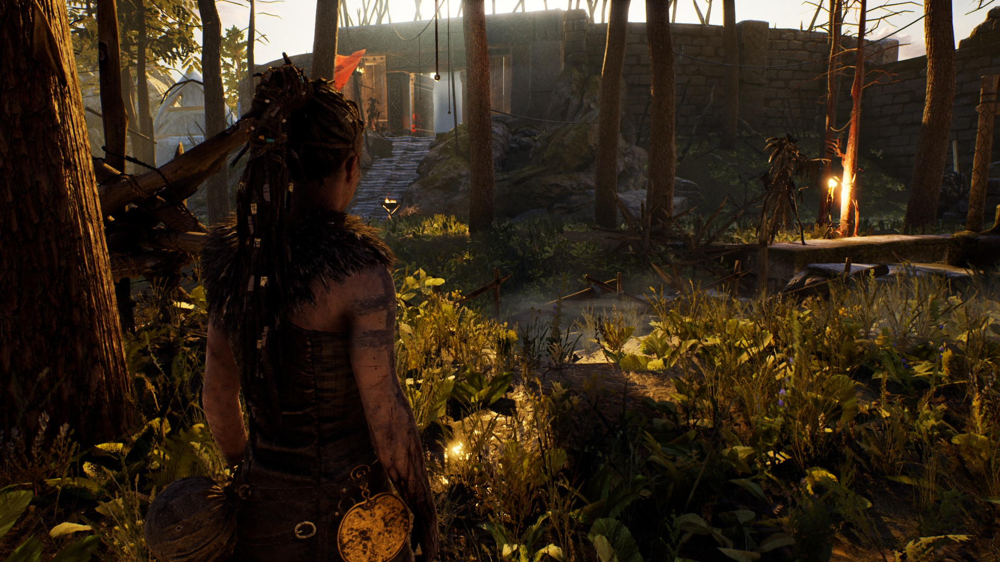
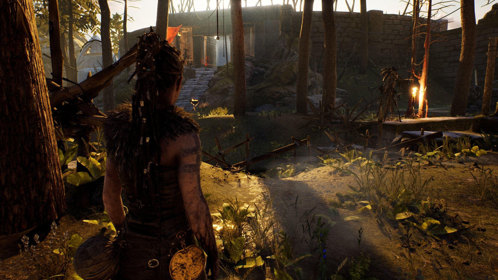

Low (50 FPS)
Medium (49 FPS)
High (49 FPS)
Very high (48 FPS)
Low (50 FPS)
Medium (49 FPS)
High (49 FPS)
Very high (48 FPS)
Foliage quality


"Set the density and draw distance of foliage. Higher settings will make the foliage thicker and visible at greater distances."